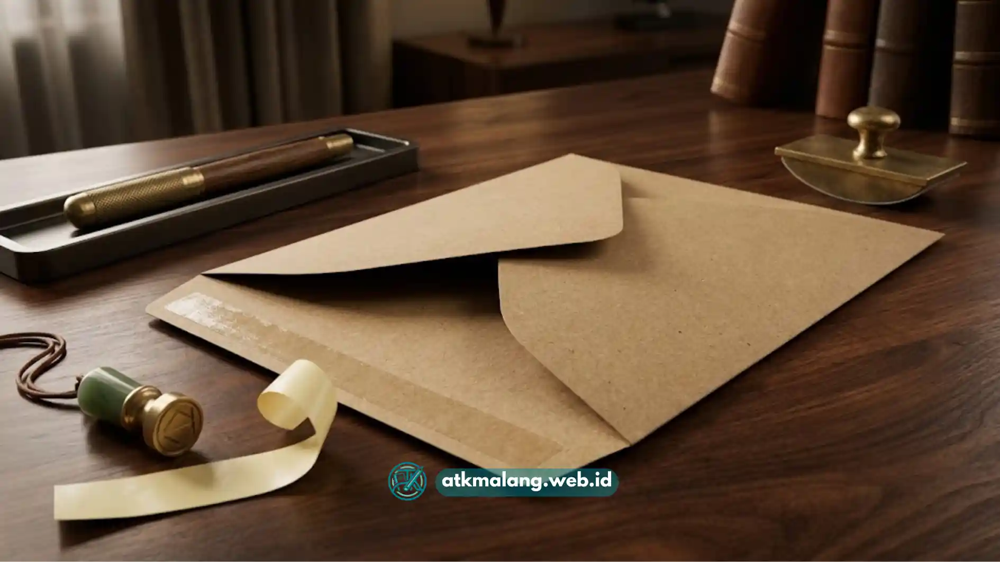

Amplop cokelat tali menggunakan pengait logam dan tali untuk penutupnya sehingga bisa dibuka-tutup berulang kali.
Sedangkan amplop cokelat seal menggunakan lem perekat yang menempel permanen sekali segel. Pemilihan di antara keduanya sebaiknya disesuaikan dengan tingkat keamanan yang dibutuhkan dokumen.
- Amplop tali lebih fleksibel karena bisa dibuka-tutup tanpa merusak fisik amplop.
- Amplop seal lebih aman untuk dokumen yang membutuhkan jaminan keutuhan segel.
- Amplop tali cocok untuk arsip aktif, amplop seal cocok untuk dokumen final atau rahasia.
- Harga kedua jenis amplop umumnya tidak berbeda jauh, tergantung ukuran dan gramasi kertas.
- Pemilihan yang tepat membantu menjaga keamanan sekaligus efisiensi kerja sehari-hari.
Daftar Isi
Apa Perbedaan Struktur Amplop Cokelat Tali dan Seal
Perbedaan utama amplop cokelat tali dan seal terletak pada mekanisme penutupnya, di mana amplop tali memakai dua pengait logam yang diikat tali. Sementara amplop seal memakai lapisan lem yang menempel saat ditekan.
Perbedaan struktur ini secara langsung memengaruhi cara penggunaan sehari-hari. Pada amplop tali, bagian penutup biasanya dilengkapi dua lingkaran logam kecil yang saling berhadapan. Tali tipis kemudian dililitkan menyilang di antara kedua lingkaran tersebut hingga amplop tertutup rapat.
Proses ini memungkinkan amplop dibuka kembali hanya dengan melepas lilitan tali, tanpa merobek badan amplop. Pada amplop seal, bagian penutup dilapisi lem kering yang akan aktif menempel saat dibasahi atau ditekan, tergantung jenis lemnya.
Setelah menempel, penutup amplop sulit dibuka kembali tanpa meninggalkan bekas robekan pada kertas. Sehingga jenis ini lebih sering dipakai ketika keutuhan segel menjadi prioritas.
Amplop Mana yang Lebih Aman untuk Dokumen Rahasia
Amplop cokelat seal umumnya dianggap lebih aman untuk dokumen rahasia karena penutup lem yang sudah menempel akan meninggalkan bekas robekan apabila dibuka paksa. Karakteristik ini membuat amplop seal lebih mudah dipakai untuk mendeteksi apakah dokumen sudah pernah dibuka sebelum sampai ke penerima.
Sebaliknya, amplop tali lebih rentan dibuka dan ditutup kembali tanpa meninggalkan jejak yang jelas, karena tali dapat dilepas dan diikat ulang dengan mudah. Karena itu, untuk dokumen seperti kontrak kerja sama, surat perjanjian, atau berkas yang bersifat rahasia.
Amplop seal umumnya menjadi pilihan yang lebih disarankan dibandingkan amplop tali. Meski demikian, tingkat keamanan amplop juga tetap bergantung pada gramasi kertas yang digunakan. Amplop dengan bahan tipis, baik jenis tali maupun seal, tetap berisiko sobek apabila ditangani secara kasar selama proses pengiriman.
Amplop Mana yang Lebih Praktis untuk Arsip yang Sering Dibuka
Amplop cokelat tali lebih praktis digunakan untuk kebutuhan arsip yang sering dibuka-tutup karena tidak merusak fisik amplop setiap kali diakses. Karakteristik ini menjadikan amplop tali pilihan yang lebih efisien untuk dokumen kerja yang masih aktif digunakan sehari-hari.
Beberapa situasi yang lebih cocok memakai amplop tali antara lain penyimpanan berkas proyek yang masih berjalan, folder pengumpulan dokumen bertahap. Serta arsip internal yang perlu diperbarui isinya secara berkala.
Dengan model pengait tali, amplop yang sama dapat dipakai berulang kali tanpa perlu mengganti amplop baru setiap kali dokumen perlu diperiksa. Sebaliknya, amplop seal kurang efisien untuk kebutuhan semacam ini karena setiap kali dibuka.
Amplop berisiko rusak dan perlu diganti dengan yang baru agar tetap terlihat rapi. Untuk kebutuhan pengarsipan aktif di kantor, pastikan Anda melengkapi stok Alat Tulis Kantor yang memadai.

Amplop cokelat seal dengan lem perekat permanen — pilihan ideal untuk dokumen final dan rahasia.Bagaimana Cara Menentukan Pilihan antara Tali dan Seal
Menentukan pilihan antara amplop tali dan seal sebaiknya didasarkan pada frekuensi akses dokumen dan tingkat kerahasiaan yang dibutuhkan, bukan sekadar preferensi tampilan. Pertimbangan ini membantu memastikan amplop yang dipilih benar-benar sesuai dengan fungsi penggunaannya.
- Jika dokumen perlu sering dibuka dan diperiksa ulang, amplop tali lebih disarankan.
- Jika dokumen bersifat final, rahasia, atau membutuhkan jaminan keutuhan segel, amplop seal lebih tepat.
- Jika pengiriman melalui jasa ekspedisi dengan risiko benturan tinggi, amplop seal memberi perlindungan tambahan terhadap risiko terbuka di jalan.
- Jika anggaran terbatas, kedua jenis amplop biasanya memiliki kisaran harga yang tidak jauh berbeda, sehingga faktor fungsi tetap menjadi pertimbangan utama.
Untuk kebutuhan pembelian amplop cokelat dalam jumlah besar, dapat dilihat pada artikel grosir map snelhechter malang atau perlengkapan lainnya yang membahas ketersediaan ukuran F4 dan A3 dengan perekat kuat.
Amplop cokelat tali dan seal memiliki keunggulan masing-masing sesuai kebutuhan penggunaannya. Amplop tali lebih fleksibel untuk arsip aktif yang sering dibuka.
Sementara amplop seal lebih unggul dalam menjaga keutuhan segel untuk dokumen rahasia atau final. Memilih jenis yang tepat berdasarkan frekuensi akses dan tingkat kerahasiaan dokumen akan membantu menjaga keamanan sekaligus efisiensi kerja di kantor.
Untuk kebutuhan pengadaan ATK kantor secara rutin di Malang, tersedia pilihan grosir dengan harga kompetitif dan layanan pengiriman cepat yang bisa diandalkan.